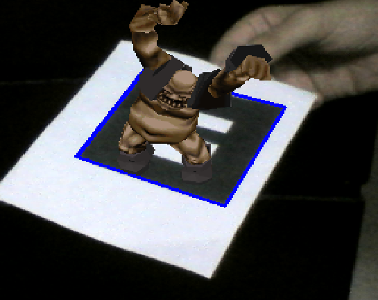
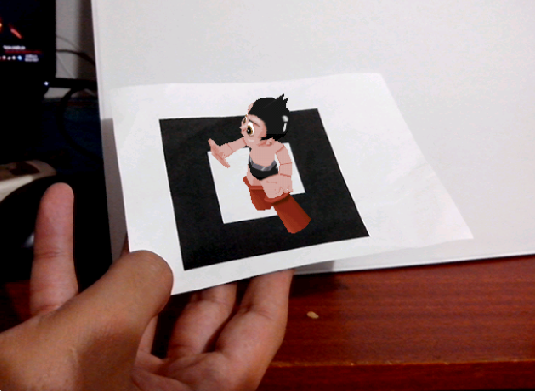

People counting using RGB videos
Augmented reality app
 List of publications
Welcome! my name is David and I am an electrical engineer from Colombia. I got my Master degree in Electronics from Universidad del Norte working with Juan Carlos Niebles. My research interests are computer vision, machine learning and computer graphics. Email: darialdo92@gmail.com